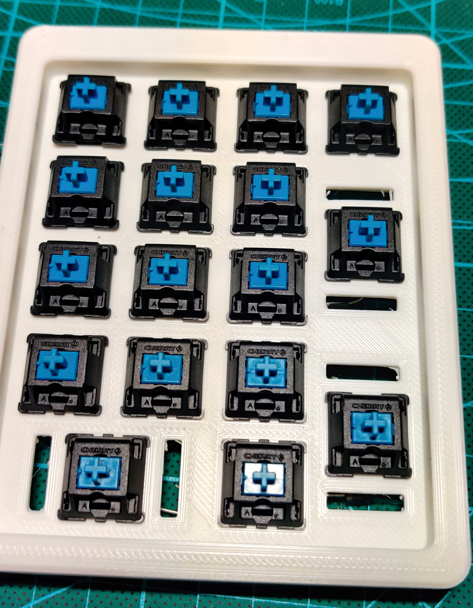
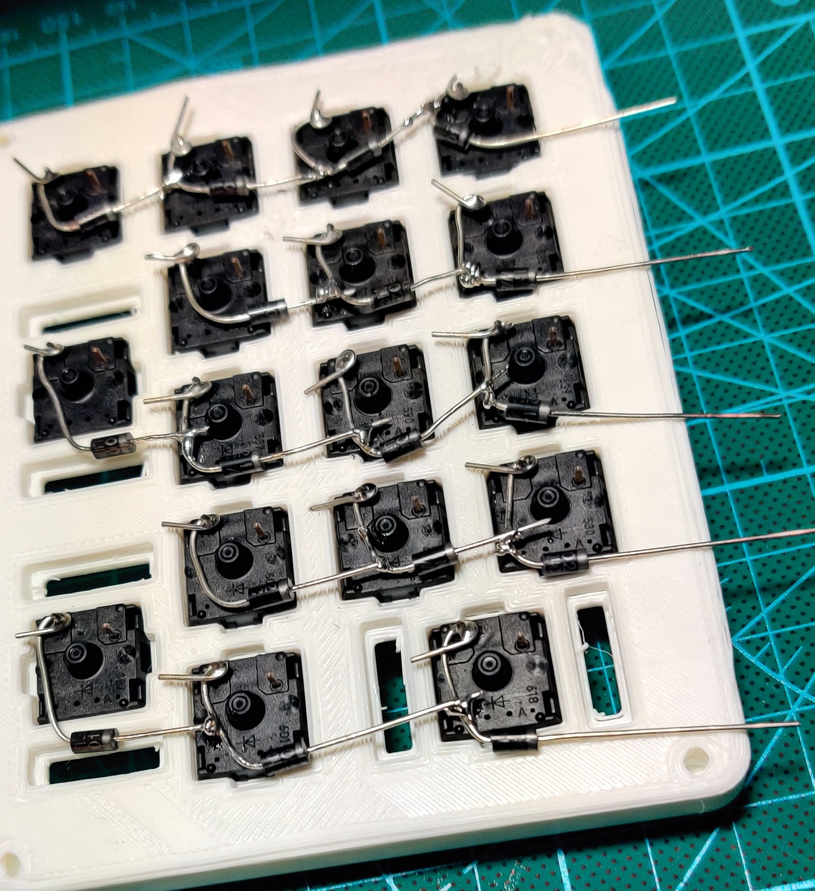

—「0X://Explanation」
My first true handwire - a log
i've been building keyboards for months and months at this point (hopefully i have done write ups ex post facto) and i wanted to fully handwire, 3d print, and program my own keyboards. i had been reading up on what to do and buying tools to achieve this goal but instead pursued frivelous 'projects' and dallied about. i eventually got tired of this and on one of my days off of work, decided after school, i would 3d print, handwire, and program a keypad in a single day. this is the knowledge, hardware, and process that went into that. documenting this is hopefully interesting or helpful to you if you want to follow along yourself.
things you will knead (links from where i bought included):
> arduino pro micro (or any teensy variant) <
> key switches (gateron silver) <
> 3d printer (creality cr-10s <
first up is creating the layout and hex file to flash the board, i have made a guide as to not repeat myself every handwire project:
i think it is always best to start by programming the pro micro first (as i have made some massive mistakes regarding the issue of not adhering to this) so thats what i did. follow this guide i have made previously:
> programming arduino pro micro <
next your gunna need a 3d model. i acquired a 3d model from here, but making your own is very possible:

now to the easy stuff, i placed the keycaps in the slots, facing the correct way

and soldered the diodes, following the layout i generated earlier (to ensure precision).
then i soldered the wires in place,

and finally i soldered the wires directly to the arduino.
since this project did not have an essential position for the arduino's port i didnt have to worry about that. i added keycaps and tested it to make sure everything worked. this project was completed in a hurry after a day off a school and albeit ugly it was a success.
ta daaa
┈ ren ♡